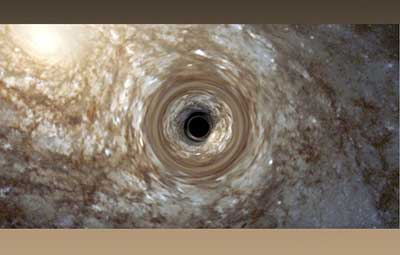

Black Holes Capture Our Imaginations
Black holes capture more than light and matter: they capture our imaginations. The bizarre notion of an infinitely small point of infinite density punching a hole in the fabric of space-time, perhaps more than any other astronomical phenomenon, challenges our very concept of the Universe.
Life of a Star

For most of a star's life, outward pressure from nuclear activity balances the inward force of gravity.
When a star runs out of fuel, gravity compresses the material in the core and it collapses under its own weight. Some dying stars become white dwarfs and neutron stars.
Gravity and Black Holes
The gravity of a typical black hole is so strong that a person who weighs 100 pounds on Earth would weigh 30 billion tons at the point just before he or she was dragged into the black hole’s inescapable gravity well.